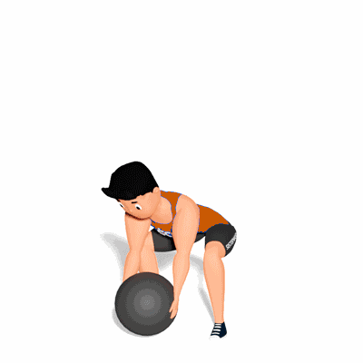

Medicine Ball Clean

Este movimento trabalha seus tendões, glúteos, coxas e núcleo. Também ajuda a desenvolver a força dos seus braços, ombros e costas, tornando-se um treino de corpo inteiro.
Ficha Técnica
Tipo: CrossFit
Grupo Muscular: Corpo
Aparelho: Nenhum
Músculos: Nenhum
Como realizar
- Com as costas alinhadas e com a curvatura da lombar mantida, coloque as mãos na bola;
- Acelere através dos calcanhares, partindo do chão até chegar a uma extensão completa dos quadris e pernas;
- Encolha os ombros, com braços estendidos;
- O quadril volta para trás, aterrisse em um agachamento frontal completo, com os cotovelos abaixo da bola;
- Erga-se completamente com a bola na posição de rack para completar o movimento;
- Retorne à posição inicial.
 RC STORE
RC STORE